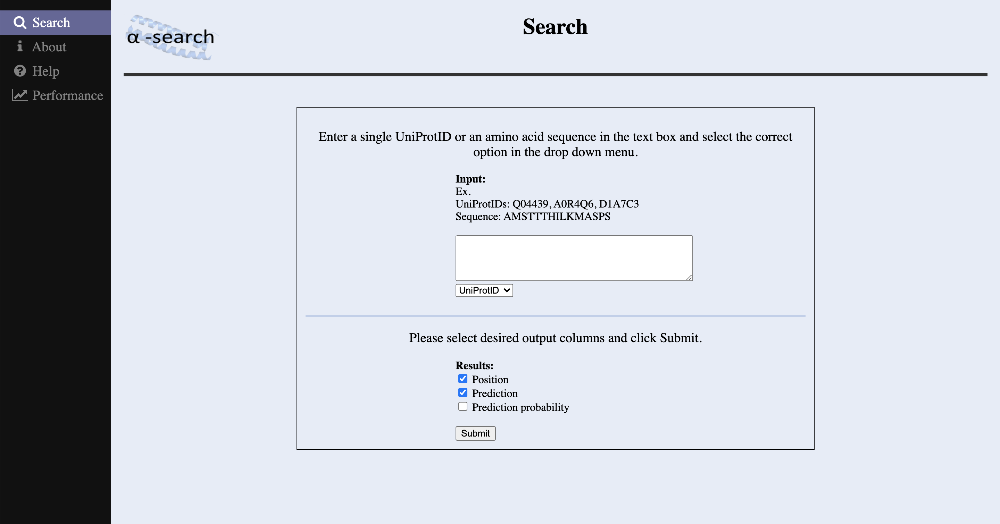

Hello!
I'm Christine and I'm currently a fourth year medical student applying for radiology residency.
2019 - 2023: Penn State College of Medicine, MD
2019: Memorial Sloan Kettering Cancer Center, Department of Biostatistics and Epidemiology, data analyst
2015 - 2018: Cornell University, Biometry and Statistics, BS
(Last updated: Dec. 2022)
Projects
Web-based risk calculators
[ongoing]
My work with Dr. Zaorsky includes developing interactive user-friendly web apps to translate complex predictive models into interpretable results for clinicians.
Identification & validation of the prognostic impact of metastatic prostate cancer phenotypes (2022): Metastatic prostate cancer survival calculator and web app
Predicting survival after palliative radiotherapy (2021): METSSS model and web app
Pan-cancer analysis of prognostic metastatic phenotypes (2021): STARS model and web app
| R / R shiny |
Python |
HTML |
CSS |
JavaScript |
α-search: A random forest classifier for predicting protein secondary structure
[Dec. 2018]

BTRY 4381/6381: Biomedical data mining and modeling final project
I used sci-kit learn to train a random forest classifier to predict regions of alpha-helices from an amino acid sequence. I also designed an interactive website for users to input their sequences or UniProtID to easily use the model to obtain predictions.
Misc
I figure skate in my free time -- I've competed in ice dance and synchronized skating.
I'm also learning how to crochet and take care of plants.
CV
Available upon request (linchristine08 [at] gmail [dot] com).
 https://orcid.org/0000-0002-4330-4704
https://orcid.org/0000-0002-4330-4704